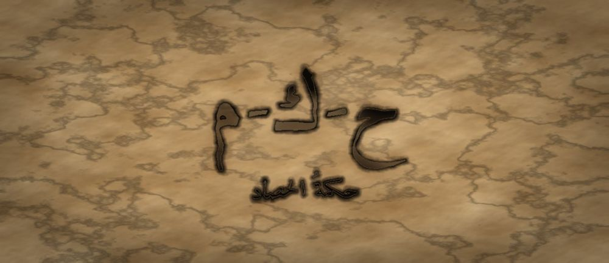

مَطبعةُ جُذور · دبي · MCMXXVI · سِلْسِلَةُ فَنِّ البَيان

مَرحلةُ الحَصَاد · الفئة · الجذر ح-ك-م · الأحنف بن قيس
❦ ✦ ❧
السِّفْرُ ١٩ — حكمةُ الحصاد
«الْحِكْمَةُ أَنْ تَعْرِفَ مَتَى تَقُولُ، وَمَتَى يَكُونُ الصَّوَابُ أَنْ تَنْتَظِرَ»

الرِّسَالَةُ الجَوْهَرِيَّة
الْحُكْمُ لَيْسَ سُرْعَةَ الْجَوَابِ، بَلْ وَزْنُهُ. أَنْ تَحْكُمَ يَعْنِي أَنْ تُمْسِكَ الْأَمْرَ فِي كَفَّيْكَ حَتَّى يَسْتَقِرَّ، ثُمَّ تَقُولَ كَلِمَةً وَاحِدَةً فِي مَوْضِعِهَا. وَالْحَلِيمُ لَا يَبْطُؤُ عَجْزًا، بَلْ يَتَمَهَّلُ لِأَنَّ الْكَلِمَةَ إِذَا خَرَجَتْ لَمْ تَعُدْ.
بِطَاقَةُ هُوِيَّةِ السِّفْر
| المستوى / الدرجة | الْحَصَاد — سُنْبُلَةٌ تَنْحَنِي (الدرجةُ الأولى في مستوى الحصادِ) |
| الفئة العمرية | ١٩ سنةً فما فوقُ · وتصلحُ للراشدِ المرافقِ والمعلّمِ |
| الجذر الأساسي | ح – ك – م · الْحُكْمُ: أَنْ تَمْنَعَ الْكَلِمَةَ مِنَ الْفَسَادِ |
| أسرة الجذر | حَكَمَ · حِكْمَة · حَاكِم · مُحْكَم · حَكِيم · اِسْتِحْكَام (كلُّها من ح-ك-م) |
| المحطّة | الْحُكْمُ — أَنْ تَزِنَ قَبْلَ أَنْ تَقُولَ |
| المرساة الحسّيّة | ضمُّ الكفَّينِ كالميزانِ وعدُّ ثلاثِ نبضاتٍ قبلَ إصدارِ أيِّ حكمٍ |
| الاستعارة | السنبلةُ الفارغةُ تنتصبُ، والمملوءةُ تنحني — وثِقلُ الحبِّ هو الذي علَّمَها الانحناءَ |
| الشخصيتان الحكيمتان | الأحنفُ بنُ قيسٍ (سيّدُ الحِلمِ) + الجَدّةُ رملة |
| الشخصية الرمزيّة | نورُ الحصادِ (نفسُها منذُ السفرِ الأوّلِ — تُثمِرُ) |
| الشخصية المضادّة | السَّيْلُ الْمُتَسَرِّعُ — شخصيّةٌ رمزيّةٌ (لا تاريخيّةٌ) يحكمُ قبلَ أن يرى، ويتعلّمُ التمهُّلَ |
| مؤشّر الرصد الوصفيّ | يُؤجّلُ جوابَهُ في موقفٍ مشحونٍ، ويُسمّي ما ينقصُهُ من معلوماتٍ قبلَ أن يحكمَ |
| مجال CASEL | إدارةُ الذاتِ + اتّخاذُ القرارِ المسؤولُ (Self-Management · Responsible Decision-Making) |
| الإسناد المرجعيّ | استرشادًا بأدبيّاتِ التفكيرِ التأمّليِّ · استرشادًا بمستوياتِ التعبيرِ المتقدّمِ |
| المرجعُ النظريّ | TRT — نَظَرِيَّةُ القراءةِ الملموسةِ |
صَاحِبُ السِّفْرِ مِنَ التُّرَاث
الأحنفُ بنُ قيسٍ التميميُّ من سادةِ البصرةِ في القرنِ الأوّلِ الهجريِّ، ضُرِبَ بحِلمِهِ المثلُ حتّى قيلَ: «أحلمُ من الأحنفِ». عُرِفَ بأنّه كان يُطيلُ الصمتَ قبلَ الكلامِ، ويسودُ قومَه بالرأيِ لا بالصوتِ. نستلهمُ منه هنا: أنَّ الحِلمَ قوّةٌ مؤجَّلةٌ لا ضعفٌ، وأنَّ تأخيرَ الحكمِ جزءٌ من صحّتِهِ.
الشَّخْصِيَّةُ المُضَادَّة — السَّيْلُ الْمُتَسَرِّعُ — رمزٌ للحكمِ العَجِلِ؛ ينحدرُ فورَ سقوطِ أوّلِ قطرةٍ ويجرفُ ما لم يفحصْهُ. يتعلّمُ في النهايةِ أن يستقرَّ في بِركةٍ حتّى يصفوَ، فيرى قاعَهُ ويرى الناسُ فيه وجوهَهم.
الجَذْرُ وَأُسْرَتُه
ح-ك-م — حَكَمَ · حِكْمَة · حَاكِم · مُحْكَم · حَكِيم · اِسْتِحْكَام
الجذرُ (ح-ك-م) صحيحٌ سالمٌ، وأصلُ معناهِ المنعُ؛ ومنه «حَكَمَةُ اللِّجَامِ» وهي ما يمنعُ الدابّةَ من الجَمْحِ. فالحُكمُ منعٌ للفوضى، والحِكمةُ منعٌ للنفسِ أن تعجلَ، و«مُحْكَم» ما شُدَّ فامتنعَ عليه الخللُ — وكلُّها فروعُ معنًى واحدٍ.
القِصَّةُ الكَامِلَة
المشهد ١ — نورُ تُسأَلُ أن تحكمَ
صَارَتْ نُورُ فِي مَوْضِعٍ لَمْ تَتَوَقَّعْهُ: جَاءَهَا اثْنَانِ مِنَ الْحَيِّ يَخْتَصِمَانِ فِي شَجَرَةٍ عَلَى الْحَدِّ بَيْنَ دَارَيْهِمَا، وَقَالَا مَعًا: «قُولِي لَنَا يَا نُورُ، فَقَدْ رَضِينَا بِكِ.» فَشَعَرَتْ بِثِقَلٍ فِي كَتِفَيْهَا لَمْ تَعْرِفْهُ مِنْ قَبْلُ. كَانَتْ قَدْ تَعَلَّمَتْ أَنْ تُنْصِتَ وَأَنْ تَسْأَلَ وَأَنْ تُحَاوِرَ وَأَنْ تُقْنِعَ وَأَنْ تَسُوقَ الْكَلَامَ، وَلَكِنَّ أَحَدًا لَمْ يَطْلُبْ مِنْهَا قَبْلَ الْيَوْمِ أَنْ تَزِنَ. فَتَحَتْ فَمَهَا لِتَقُولَ رَأْيَهَا فَوْرًا — ثُمَّ أَغْلَقَتْهُ. وَقَالَتْ فِي نَفْسِهَا: «مَا أَسْرَعَ لِسَانِي، وَمَا أَبْطَأَ عِلْمِي!» وَتَذَكَّرَتْ كَيْفَ كَانَتْ تَغَارُ فِي صِغَرِهَا مِمَّنْ يُجِيبُونَ بِسُرْعَةٍ، ثُمَّ عَرَفَتِ الْيَوْمَ أَنَّ الْجَوَابَ السَّرِيعَ أَرْخَصُ مَا يَمْلِكُهُ الْإِنْسَانُ. فَجَلَسَتْ عَلَى الْحَجَرِ وَقَالَتْ لَهُمَا: «أَمْهِلَانِي.» فَنَظَرَ أَحَدُهُمَا إِلَى الْآخَرِ نَظْرَةَ مَنْ لَمْ يَتَوَقَّعْ هَذَا.
المشهد ٢ — السَّيلُ المتسرّعُ يحكمُ قبلَ أن يرى
انْحَدَرَ مِنْ أَعْلَى التَّلِّ السَّيْلُ الْمُتَسَرِّعُ، وَقَدْ سَمِعَ أَوَّلَ الْكَلَامِ وَلَمْ يَسْمَعْ آخِرَهُ، فَصَاحَ وَهُوَ يَجْرِي: «الْأَمْرُ وَاضِحٌ! الشَّجَرَةُ لِمَنْ سَقَاهَا، وَالْحَقُّ ظَاهِرٌ كَالشَّمْسِ، وَمَنْ تَرَدَّدَ فَهُوَ جَبَانٌ!» ثُمَّ مَضَى يَجْرِفُ التُّرَابَ وَالْحَصَى وَأَوْرَاقَ الشَّجَرَةِ نَفْسِهَا الَّتِي حَكَمَ لَهَا. وَقَفَتْ نُورُ تَنْظُرُ إِلَى مَا خَلَّفَهُ: مَاءٌ كَثِيرٌ، وَطِينٌ كَثِيرٌ، وَلَا شَيْءَ يُرَى فِيهِ. وَتَسَاءَلَتْ: «كَيْفَ يَحْكُمُ مَنْ لَا يَرَى قَاعَهُ؟» وَلَمْ تَقُلْهَا لَهُ فِي وَجْهِهِ، بَلْ سَجَّلَتْهَا لِنَفْسِهَا. ثُمَّ عَادَ السَّيْلُ بَعْدَ قَلِيلٍ يَصِيحُ: «وَلِمَ سَكَتُّمْ؟ أَلَمْ أَقُلْ لَكُمُ الْحَقَّ؟» وَلَمْ يَنْتَبِهْ أَنَّ الَّذِينَ سَكَتُوا لَمْ يَسْكُتُوا رِضًا، بَلْ سَكَتُوا لِأَنَّهُمْ لَمْ يَجِدُوا فِي مَائِهِ الْعَكِرِ مَا يُرَدُّ عَلَيْهِ. وَكَتَبَتْ نُورُ فِي دَفْتَرِهَا: «الصَّوْتُ الْعَالِي يُسْكِتُ وَلَا يُقْنِعُ.»
المشهد ٣ — الجَدّةُ رملةُ والميزانُ في الكفَّينِ
ضَمَّتِ الْجَدَّةُ رَمْلَةُ كَفَّيْهَا أَمَامَ صَدْرِهَا كَأَنَّهُمَا كِفَّتَا مِيزَانٍ، وَقَالَتْ: «يَا نُورُ، ضَعِي فِي كَفٍّ مَا سَمِعْتِ، وَفِي كَفٍّ مَا لَمْ تَسْمَعِيهِ بَعْدُ. ثُمَّ عُدِّي ثَلَاثَ نَبَضَاتٍ. إِنْ ثَقُلَتِ الْكَفُّ الْفَارِغَةُ فَاسْأَلِي، وَلَا تَحْكُمِي.» فَعَلَتْ نُورُ، فَوَجَدَتْ أَنَّهَا لَمْ تَسْمَعْ بَعْدُ مَنْ غَرَسَ الشَّجَرَةَ، وَلَا مَنْ يَنْتَفِعُ بِظِلِّهَا، وَلَا مَا قَالَهُ الْجِيرَانُ. قَالَتْ: «كَفِّي الْفَارِغَةُ أَثْقَلُ يَا جَدَّةُ.» فَابْتَسَمَتِ الْجَدَّةُ وَقَالَتْ: «هَذَا أَوَّلُ الْحُكْمِ. مَنْ عَرَفَ مَا يَنْقُصُهُ، فَقَدْ حَكَمَ نِصْفَ الْحُكْمِ.» ثُمَّ أَضَافَتِ الْجَدَّةُ: «وَاحْذَرِي كَفًّا تَمْتَلِئُ بِهَوَاكِ فَتَحْسَبِينَهَا مُمْتَلِئَةً بِالْعِلْمِ. فَإِنَّ أَثْقَلَ مَا يَمِيلُ بِالْمِيزَانِ لَيْسَ الْحُجَّةَ، بَلِ الرَّغْبَةَ.» فَأَطْرَقَتْ نُورُ، وَسَأَلَتْ نَفْسَهَا لِأَوَّلِ مَرَّةٍ: «أَيُّ الرَّجُلَيْنِ أُحِبُّ أَكْثَرَ؟» ثُمَّ رَفَعَتْ ذَلِكَ مِنَ الْكَفَّيْنِ كِلْتَيْهِمَا.
المشهد ٤ — الأحنفُ بنُ قيسٍ يُعلِّمُها الحِلمَ
جَاءَ الْأَحْنَفُ بْنُ قَيْسٍ، وَكَانَ لَا يُسْرِعُ فِي مَشْيِهِ وَلَا فِي كَلَامِهِ، فَجَلَسَ وَسَكَتَ حَتَّى ظَنَّتْ نُورُ أَنَّهُ نَسِيَهَا. ثُمَّ قَالَ: «يَا نُورُ، مَا سُدْتُ قَوْمِي بِأَنِّي أَعْلَمُهُمْ، وَلَكِنْ بِأَنِّي أَبْطَؤُهُمْ غَضَبًا. وَالْكَلِمَةُ فِي فَمِكِ أَسِيرَتُكِ، فَإِذَا خَرَجَتْ صِرْتِ أَسِيرَتَهَا.» قَالَتْ: «وَمَتَى أَحْكُمُ إِذَنْ؟» قَالَ: «إِذَا سَمِعْتِ الطَّرَفَ الْآخَرَ كَمَا سَمِعْتِ الْأَوَّلَ، وَإِذَا رَضِيتِ بِحُكْمِكِ لَوْ كَانَ عَلَيْكِ لَا لَكِ، وَإِذَا لَمْ يَكُنْ فِي صَدْرِكِ غَيْظٌ سَاعَةَ تَقُولِينَ. فَإِنْ نَقَصَتْ وَاحِدَةٌ، فَأَخِّرِي — وَتَأْخِيرُ الْحُكْمِ حُكْمٌ.» ثُمَّ قَالَ الْأَحْنَفُ وَهُوَ يَنْظُرُ إِلَى بَعِيدٍ: «وَمَا نَدِمْتُ عَلَى سُكُوتٍ قَطُّ، وَنَدِمْتُ عَلَى كَلَامٍ مِرَارًا. وَلَوْ كَانَ الْحِلْمُ ضَعْفًا مَا احْتَاجَ إِلَى هَذَا الْقَدْرِ مِنَ الْقُوَّةِ.» فَحَفِظَتْهَا نُورُ كَمَا تُحْفَظُ الْأَمْثَالُ.
المشهد ٥ — نورُ تزنُ ثمَّ تقولُ
لَمْ تَحْكُمْ نُورُ فِي ذَلِكَ الْيَوْمِ. قَالَتْ لِلرَّجُلَيْنِ: «أَمْهِلَانِي حَتَّى الْغَدِ، فَإِنَّ عِنْدِي سُؤَالَيْنِ لَمْ أَسْأَلْهُمَا.» فَغَضِبَ أَحَدُهُمَا قَلِيلًا، ثُمَّ سَكَنَ. وَفِي الْغَدِ سَأَلَتْ، وَسَمِعَتْ، وَنَظَرَتْ إِلَى الشَّجَرَةِ بِنَفْسِهَا، فَإِذَا جِذْعُهَا فِي أَرْضِ هَذَا وَظِلُّهَا عَلَى دَارِ ذَاكَ. فَقَالَتْ جُمْلَةً وَاحِدَةً: «الْجِذْعُ لِمَنْ فِي أَرْضِهِ، وَالظِّلُّ لِمَنْ يَنَامُ تَحْتَهُ، وَالثَّمَرُ بَيْنَكُمَا نِصْفَيْنِ.» فَسَكَتَ الرَّجُلَانِ، ثُمَّ ضَحِكَا، ثُمَّ تَصَافَحَا. وَشَعَرَتْ نُورُ بِأَنَّ الثِّقَلَ الَّذِي فِي كَتِفَيْهَا لَمْ يَزُلْ — وَلَكِنَّهُ صَارَ ثِقَلًا تَحْتَمِلُهُ. وَفِي اللَّيْلِ رَاجَعَتْ نَفْسَهَا: هَلْ كَانَتْ سَتَرْضَى بِهَذَا الْحُكْمِ لَوْ كَانَتْ هِيَ أَحَدَ الرَّجُلَيْنِ؟ فَوَجَدَتْ جَوَابَهَا نَعَمْ، فَنَامَتْ. وَعَرَفَتْ أَنَّ أَوَّلَ مَنْ يُحَاسِبُ الْحَاكِمَ هُوَ الْحَاكِمُ نَفْسُهُ قَبْلَ أَنْ يَنَامَ.
المشهد ٦ — السَّيلُ يصيرُ بِركةً
عَادَ السَّيْلُ الْمُتَسَرِّعُ فِي الْمَسَاءِ وَقَدْ تَعِبَ مِنَ الْجَرْيِ، وَقَالَ: «أَنَا أَسْرَعُ مِنْكِ يَا نُورُ، فَلِمَ رَضِيَ النَّاسُ بِحُكْمِكِ وَلَمْ يَرْضَوْا بِحُكْمِي؟» قَالَتْ: «لِأَنَّكَ تَحْكُمُ وَأَنْتَ تَجْرِي، وَمَنْ جَرَى لَمْ يَرَ. وَأَنَا وَقَفْتُ حَتَّى صَفَوْتُ.» فَتَوَقَّفَ السَّيْلُ فِي مُنْخَفَضٍ مِنَ الْأَرْضِ، وَظَلَّ سَاكِنًا سَاعَةً، فَتَرَسَّبَ طِينُهُ وَصَفَا مَاؤُهُ. وَنَظَرَ فَرَأَى قَاعَهُ لِأَوَّلِ مَرَّةٍ، ثُمَّ رَأَى وَجْهَ نُورَ فِيهِ. فَقَالَ فِي دَهْشَةٍ: «مَا كُنْتُ أَعْلَمُ أَنَّ الْوُقُوفَ يُرِي!» وَصَارَ مِنْ يَوْمِهَا بِرْكَةً يَشْرَبُ مِنْهَا الْحَيُّ كُلُّهُ. وَصَارَ الْأَطْفَالُ يَقِفُونَ عَلَى حَافَّتِهِ لِيَرَوْا وُجُوهَهُمْ، وَصَارَ يَقُولُ لِكُلِّ مَنْ مَرَّ بِهِ مُسْرِعًا: «قِفْ لَحْظَةً، فَإِنَّ الَّذِي يَجْرِي لَا يَرَى إِلَّا الْغُبَارَ الَّذِي يُثِيرُهُ بِنَفْسِهِ.» وَكَانَ ذَلِكَ أَنْفَعَ مِنْ كُلِّ مَا جَرَفَهُ فِي عُمْرِهِ.
النُّسْخَةُ المُخْتَصَرَة
جَاءَ رَجُلَانِ يَخْتَصِمَانِ إِلَى نُورَ فِي شَجَرَةٍ، فَأَرَادَتْ أَنْ تُجِيبَ فَوْرًا. مَرَّ السَّيْلُ الْمُتَسَرِّعُ وَصَاحَ: «الْأَمْرُ وَاضِحٌ!» ثُمَّ جَرَفَ كُلَّ شَيْءٍ وَلَمْ يُبْقِ مَا يُرَى. ضَمَّتِ الْجَدَّةُ رَمْلَةُ كَفَّيْهَا كَالْمِيزَانِ وَقَالَتْ: «ضَعِي مَا سَمِعْتِ فِي كَفٍّ، وَمَا لَمْ تَسْمَعِيهِ فِي كَفٍّ.» فَوَجَدَتْ نُورُ الْكَفَّ الْفَارِغَةَ أَثْقَلَ. وَقَالَ الْأَحْنَفُ بْنُ قَيْسٍ: «الْكَلِمَةُ فِي فَمِكِ أَسِيرَتُكِ، فَإِذَا خَرَجَتْ صِرْتِ أَسِيرَتَهَا.» فَأَجَّلَتْ نُورُ حُكْمَهَا يَوْمًا، وَسَأَلَتْ، وَنَظَرَتْ، ثُمَّ قَالَتْ جُمْلَةً وَاحِدَةً عَادِلَةً فَتَصَافَحَ الرَّجُلَانِ. وَوَقَفَ السَّيْلُ حَتَّى صَفَا، فَرَأَى قَاعَهُ، وَصَارَ بِرْكَةً يَشْرَبُ مِنْهَا النَّاسُ. وَقَالَتْ نُورُ لِنَفْسِهَا قَبْلَ أَنْ تَنَامَ: «هَلْ كُنْتُ أَرْضَى بِهَذَا الْحُكْمِ لَوْ كَانَ عَلَيَّ؟» فَوَجَدَتْ جَوَابَهَا نَعَمْ، فَنَامَتْ مُطْمَئِنَّةً. وَتِلْكَ عَلَامَةُ الْحُكْمِ الصَّحِيحِ. وَوَقَفَ السَّيْلُ الْمُتَسَرِّعُ فِي مُنْخَفَضٍ حَتَّى تَرَسَّبَ طِينُهُ وَصَفَا مَاؤُهُ، فَرَأَى قَاعَهُ لِأَوَّلِ مَرَّةٍ وَقَالَ فِي دَهْشَةٍ: «مَا كُنْتُ أَعْلَمُ أَنَّ الْوُقُوفَ يُرِي!» وَصَارَ بِرْكَةً يَشْرَبُ مِنْهَا الْحَيُّ كُلُّهُ.
المِرْسَاةُ الحِسِّيَّة
يَضُمُّ الْمُتَعَلِّمُ كَفَّيْهِ أَمَامَ صَدْرِهِ، بَاطِنُهُمَا إِلَى أَعْلَى، كَأَنَّهُمَا كِفَّتَانِ. يَضَعُ فِي الْيُمْنَى مَا سَمِعَهُ، وَفِي الْيُسْرَى مَا يَنْقُصُهُ، ثُمَّ يَعُدُّ ثَلَاثَ نَبَضَاتٍ عَلَى مِعْصَمِهِ. إِنْ شَعَرَ أَنَّ الْيُسْرَى أَثْقَلُ، سَأَلَ وَلَمْ يَحْكُمْ. وَيُؤَدِّي الْحَرَكَةَ بِنَفْسِهِ كَامِلَةً، وَلَا يَلْمَسُهُ أَحَدٌ أَثْنَاءَهَا.
العَنَاصِرُ الخَمْسَةُ لِلتَّطْبِيق
| المُخرَجُ اللُّغَويُّ | «أَزِنُ قَبْلَ أَنْ أَقُولَ» — تُقالُ في السرِّ قبلَ أيِّ ردٍّ في موقفٍ مشحونٍ، ويتبعُها سؤالٌ واحدٌ: «ما الذي لم أسمعْهُ بعدُ؟» |
| الحركةُ الجسديّةُ | يضمُّ المتعلّمُ كفَّيهِ أمامَ صدرِهِ كميزانٍ ويعدُّ ثلاثَ نبضاتٍ في معصمِهِ قبلَ أن يتكلّمَ. لا حبسَ نَفَسٍ ولا عدَّ أنفاسٍ — النبضُ فقط. |
| الدفءُ العلائقيُّ | يُعلِنُ تأجيلَهُ صراحةً: «سأُجيبُكَ غدًا لأنّي أريدُ أن أسمعَكَ جيّدًا» — فالتأجيلُ المُعلَنُ احترامٌ، والتأجيلُ الصامتُ إهمالٌ. |
| البديلُ الحسّيُّ | حجرانِ صغيرانِ في كفَّينِ: حجرُ «ما أعرفُ» وحجرُ «ما ينقصُني»؛ يوازنُ بينهما بيدِهِ فيرى بالحسِّ متى يميلُ الميزانُ. |
| الجسرُ الإنجليزيُّ | «Delaying judgment is part of judging well.» — تُقالُ بالعربيّةِ ثمَّ بالإنجليزيّةِ حفاظًا على التوازنِ اللُّغَويِّ. |
دَلِيلُ الأَهْلِ وَالمُعَلِّم
| قبل الجلسة | ضعوا الأجهزةَ في صندوقٍ مغلقٍ، واتّفقوا على قاعدةٍ واحدةٍ مكتوبةٍ: «لا يُقاطَعُ أحدٌ حتّى يسكتَ من تلقاءِ نفسِهِ». اقرؤوها بصوتٍ مسموعٍ قبلَ البدءِ. |
| أثناء الجلسة | اعرضوا موقفًا خلافيًّا خياليًّا، واطلبوا حكمًا مؤجَّلًا: يقولُ كلُّ واحدٍ أوّلًا ما ينقصُهُ من معلوماتٍ قبلَ أن يقولَ رأيَهُ. امتدحوا التأجيلَ الجيّدَ كما يُمتدَحُ الجوابُ الجيّدُ. |
| بعد الجلسة | خلالَ الأسبوعِ، سجّلوا في مفكّرةٍ لحظةً واحدةً أجّلَ فيها كلُّ فردٍ حكمَهُ وماذا اكتشفَ بعدَ التأجيلِ. لا تقارِنوا بينَ الأفرادِ ولا تجعلوها مسابقةً. |
مُؤَشِّرَاتُ الرَّصْدِ الوَصْفِيَّة
| ما تُلاحِظُه | ماذا يعني |
|---|---|
| يسألُ سؤالًا واحدًا قبلَ أن يبديَ رأيَهُ | مؤشّرٌ وصفيٌّ على أنَّ جمعَ المعلومةِ صارَ عادةً سابقةً للحكمِ، يُرصَدُ ولا يُبنى عليه منعٌ. |
| يقولُ صراحةً: «لا أعرفُ بعدُ» | ثقةٌ ناضجةٌ لا تردُّدٌ؛ الاعترافُ بالنقصِ من علاماتِ الحكمِ السليمِ. |
| يهدأُ صوتُهُ حينَ يشتدُّ الخلافُ | انتقالُ الطاقةِ من الانفعالِ إلى التفكيرِ — يُلاحَظُ في نبرِهِ لا في كلماتِهِ فقط. |
| يقبلُ حكمًا لو كان عليه لا له | مؤشّرٌ وصفيٌّ على العدلِ الداخليِّ، وهو أعمقُ من صحّةِ الحكمِ نفسِهِ. |
مُفْرَدَاتُ السِّفْر
| الكلمة | المعنى |
|---|---|
| حُكْمٌ | أنْ تزِنَ الأمرَ ثمَّ تقولَ فيه كلمةً |
| حِكْمَةٌ | أنْ تضعَ الشيءَ في موضعِهِ وفي وقتِهِ |
| حِلْمٌ | قوّةٌ تُمسِكُ نفسَها عندَ الغضبِ |
| مُحْكَمٌ | شيءٌ شُدَّ ورُتِّبَ فلا يتزعزعُ |
| تَرَوٍّ | أنْ تتمهّلَ لتنظرَ من كلِّ جهةٍ |
| إِنْصَافٌ | أنْ تُعطيَ خصمَكَ حقَّهُ كما تُعطي نفسَكَ |
الجِسْرُ الإِنْجْلِيزِيّ
| عربي | English |
|---|---|
| أَزِنُ قَبْلَ أَنْ أَقُولَ | I weigh before I speak |
| مَا الَّذِي لَمْ أَسْمَعْهُ بَعْدُ؟ | What have I not yet heard? |
| تَأْخِيرُ الْحُكْمِ حُكْمٌ | Delaying judgment is itself a judgment |
| الْحِلْمُ قُوَّةٌ | Forbearance is strength |
| الْكَفُّ الْفَارِغَةُ أَثْقَلُ | The empty hand weighs more |
| وَقَفْتُ حَتَّى صَفَوْتُ | I stood still until I cleared |
أَسْئِلَةُ الفَهْم
- مَاذَا فَعَلَ السَّيْلُ الْمُتَسَرِّعُ بِالشَّجَرَةِ الَّتِي حَكَمَ لَهَا؟ (تَذَكُّرٌ)
- لِمَاذَا كَانَتِ الْكَفُّ الْفَارِغَةُ أَثْقَلَ مِنَ الْمَمْلُوءَةِ فِي مِيزَانِ الْجَدَّةِ؟ (اِسْتِنْتَاجٌ)
- ضُمَّ كَفَّيْكَ كَالْمِيزَانِ وَعُدَّ ثَلَاثَ نَبَضَاتٍ، ثُمَّ قُلْ: مَا الَّذِي يَنْقُصُنِي فِي آخِرِ خِلَافٍ مَرَّ بِكَ؟ (سُؤَالٌ حِسِّيٌّ حَرَكِيٌّ)
- مَتَى أَجَّلْتَ حُكْمًا فَتَبَيَّنَ لَكَ أَنَّ التَّأْجِيلَ كَانَ هُوَ الصَّوَابَ؟ (رَبْطٌ شَخْصِيٌّ)
نَشَاطٌ وَوَسَائِط
| نشاطٌ فنّيّ | «ميزانُ السنبلةِ»: يرسمُ المتعلّمُ سنبلتينِ — واحدةً منتصبةً فارغةً وأخرى منحنيةً ممتلئةً — ويكتبُ على حبّاتِ المنحنيةِ أسئلةً سألها قبلَ أن يحكمَ. كلّما سألَ سؤالًا جديدًا أضافَ حبّةً وزادَ الانحناءَ قليلًا. |
| نشاطٌ تمثيليّ | «الحَكَمُ المؤجَّلُ»: ثلاثةٌ يمثّلونَ نزاعًا خياليًّا بسيطًا، والرابعُ حَكَمٌ لا يملكُ إلّا ثلاثةَ أسئلةٍ. يُعادُ المشهدُ مرّتينِ: مرّةً بحكمٍ فوريٍّ، ومرّةً بحكمٍ مؤجَّلٍ. ثمَّ يتحدّثُ الجميعُ عن الفرقِ في شعورِهم، بِلا تفضيلِ شخصٍ على شخصٍ. |
جِسْرُ الذَّاكِرَة
إلى الوراءِ — السفرُ الثامنَ عشرَ («سياقةُ الثمرةِ»): تعلَّمتَ أن تسوقَ كلامَكَ إلى غايةٍ، فصارَ لِسانُكَ يعرفُ طريقَهُ. والآنَ تتعلّمُ أنَّ من يملكُ الطريقَ يحتاجُ أن يعرفَ متى يمشي ومتى يقفُ. إلى الأمامِ — السفرُ العشرونَ («إرثُ الحصادِ»): إذا نضجَ حُكمُكَ، لم يبقَ إلّا أن تُورِثَهُ. فالحكمةُ التي لا تُزرَعُ في غيرِكَ تموتُ معكَ.
قَائِمَةُ التَّحَقُّق
- الجذرُ (ح-ك-م) صحيحٌ صرفيًّا، وأصلُ معناهُ (المنعُ) مُبيَّنٌ للمعلّمِ، وأسرتُهُ معروضةٌ بدقّةٍ — صفرُ أخطاءٍ صرفيّةٍ.
- المؤشّراتُ الأربعةُ وصفيّةٌ للرصدِ فقط، ولا تُستعمَلُ بوّابةً تمنعُ متعلّمًا من الانتقالِ.
- الأحنفُ بنُ قيسٍ مُوثَّقٌ تاريخيًّا بهامشٍ قصيرٍ صحيحٍ، والسَّيلُ المتسرّعُ موسومٌ صراحةً كرمزيٍّ لا تاريخيٍّ، ويتحوّلُ ولا يُشيطَنُ.
- لا تمرينَ نفَسٍ ولا حبسَ نفَسٍ في أيِّ نشاطٍ؛ العدُّ على النبضِ، وحدُّ اللمسِ محفوظٌ: كلُّ حركةٍ يؤدّيها المتعلّمُ بنفسِهِ.
- الإسنادُ بصيغةِ «استرشادًا بـ» فقط، بِلا ادّعاءِ اعتمادٍ أو مطابقةٍ لأيِّ إطارٍ، والتسميةُ TRT — نَظَرِيَّةُ القراءةِ الملموسةِ.
- التشكيلُ مدقّقٌ على كلِّ كلمةٍ في القصّةِ والنسخةِ المختصرةِ، والجسرُ التراكميُّ ثنائيُّ الاتّجاهِ يربطُ بالسفرِ الثامنَ عشرَ والعشرينَ.

مَطبعةُ جُذور · دبي · MCMXXVI · صمّمه وطوّره د. عادل ف. عامر
Designed and developed by Dr. Adel F. Amer · Amer (2024) · CC BY-NC-SA 4.0
↤ عودةٌ إلى خِزانةِ الأسفار